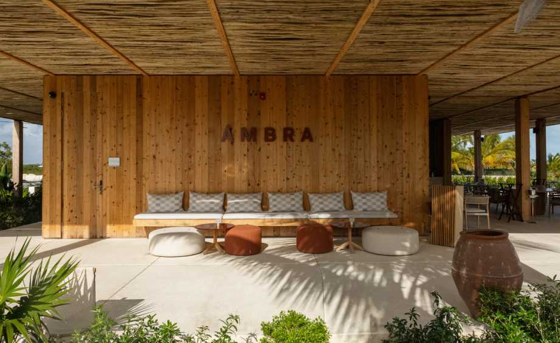

When the weather warms up, there's nothing quite like enjoying a meal outdoors. Al fresco dining allows you to savor your food while soaking up the sunshine and fresh air. But, before you head out for a meal at ÃMBRA, it's important to keep a few things in mind to ensure a pleasant experience.
First and foremost, always make a reservation if possible. ÃMBRA can get busy, especially during peak dining hours, and having a reservation guarantees you a table. This way, you won't have to wait around and can start enjoying your meal right away.
Once you're seated, take a moment to familiarize yourself with the menu. ÃMBRA offers a variety of delicious dishes, from traditional Italian pasta to mouthwatering pizzas. If you're unsure about what to order, don't hesitate to ask your server for recommendations. They are there to help guide you through the menu and can suggest popular dishes or specials.
As you wait for your food to arrive, take in the ambiance around you. ÃMBRA's outdoor seating area is beautifully decorated, creating a cozy and inviting atmosphere. Enjoy the sights and sounds of the bustling city streets while you sip on a refreshing drink.
When your food does arrive, take your time to savor each bite. Whether you're indulging in a creamy carbonara or a crispy thin-crust pizza, appreciate the flavors and textures of each dish. Remember to chew slowly and enjoy the experience of dining al fresco.
While dining outdoors can be a delightful experience, it's essential to be mindful of your surroundings. Keep an eye out for any pesky insects that may try to join you at the table. ÃMBRA provides citronella candles to help keep bugs at bay, so feel free to ask your server for one if needed.
Additionally, be considerate of other diners around you. Keep your voice at a moderate volume and avoid using your phone or playing loud music. Respect the peaceful dining environment and allow everyone to enjoy their meal without distractions.
As you finish your meal, take a moment to relax and bask in the warm sun. ÃMBRA's outdoor dining area offers a serene setting where you can unwind and enjoy the company of your dining companions. Whether you're dining with friends, family, or solo, take this time to appreciate the simple joys of good food and good company.
Finally, when it's time to leave, don't forget to thank your server for a wonderful dining experience. A simple gesture of gratitude goes a long way and shows your appreciation for their hard work. Leaving a generous tip is also a great way to show your appreciation for excellent service.
In conclusion, dining al fresco at ÃMBRA can be a delightful experience if done right. By making a reservation, exploring the menu, savoring your food, being mindful of your surroundings, and showing gratitude, you can ensure a pleasant and memorable meal outdoors. So, next time you plan to dine outside, keep these tips in mind for a truly enjoyable experience at ÃMBRA.